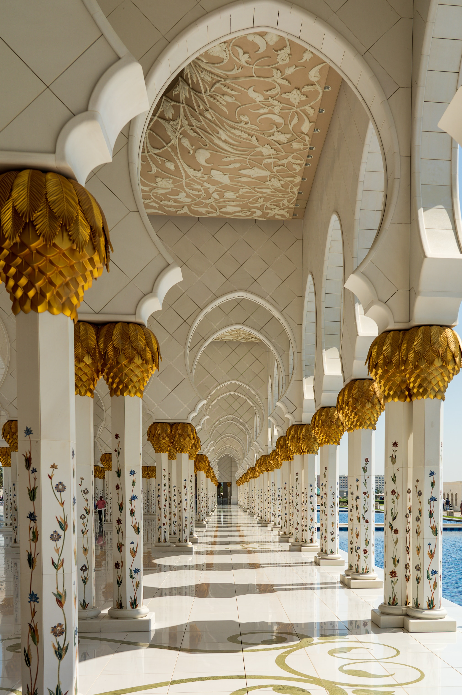

图片来源：Unsplash
壮丽的清真寺之巅
阿布扎比谢赫扎伊德清真寺，又称阿布扎比大清真寺，是阿拉伯联合酋长国阿布扎比的一座标志性建筑。它以其庄严肃穆的氛围和壮丽的建筑风格而闻名于世。
建筑壮丽
该清真寺的建筑风格融合了莫尔哥特、奥斯曼和蒙古等传统风格，巧妙地展现了伊斯兰建筑的优雅和庄重。寺内的大理石装饰、镀金穹顶和细致的石雕都展现了精湛的工艺和细腻的艺术表达。
宏伟的穹顶
该清真寺的最引人注目之处是其宏伟的穹顶。它由白色大理石制成，镶嵌着精美的花纹和波浪线，散发着宁静而神圣的氛围。夜晚时分，当阳光透过穹顶的窗户照射下来，整个清真寺都被柔和的光芒所包围。